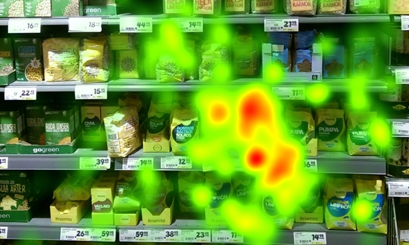

Eye-Tracking with Gaze Heat Maps
Fall 2019 graduate intern project for The Home Depot Orangeworks Innovation Center. The project goal was to explore the use of eye tracking in stores to generate gaze heatmaps for consumer insights. Utilized a Tobii Eye Tracker and built prototypes in Unity.
- Client:The Home Depot
- Website:Github Repo
- Completed:Dec 11, 2019

Background
When customers are shopping through THD.com, we get a lot of insight from clickstream data and page focus heat maps,
but we don’t have any of this information in our physical store locations. It could be beneficial to have heat maps
of our customers' shopping behaviors when they're browsing through the aisles.
Gaze heat maps are visualizations which show the general distribution of gaze points. They are typically displayed as a color
gradient overlay on the presented image or stimulus. The red, yellow, and green colors represent in descending order the amount
of gaze points that were directed towards parts of the image.
Tobii is a Swedish tech company that develops and sells products for eye control and is a world leader for eye tracking in assistive technology,
research, work life, and gaming. We have two Tobii 4C eye-tracking devices in the OW office and wanted to do an exploratory project on the technology
to see if we could generate such gaze heap maps.
Goal
My goal was go explore the use of Tobii 4C and demonstrate an analytics use case. A prime example would be the ability to generate a gaze heat map of sorts such as the image shown on this project description from the Tobii site. One thing to note is that Tobii 4C devices were originally meant for gamers and are required to be stationed beneath a monitor screen. Additionally we've discovered that there are locked device requirements if we wanted to use Tobii's Pro SDK which can generate heat maps (requires an enterprise license). This created both physical and software limitations. However, we wanted to still attempt a "hacky" way to implement it with Unity (Tobii provides a free supported SDK) and ultimately test it with products on a physical bay shelf.
Process
The first milestone was to play with the Unity Tobii SDK to see if I could prototype a virtual 3D game simulation of a customer walking in and gaze at items on a shelf. My goal was to explore if we could use the "Gaze Aware" scripts Tobii has provided and generate some sort of color heat map. Using free Unity resources in addition to custom C# color scripts I created myself through trial and error, I was able to develop a mini game simulation:
The simulation starts by the user pressing the red button to initiate a one minute "staring session". The user then walks around and looks at each product on a shelf, similar to how customers would act in a real THD store. After timer runs out, the products will change color depending on how long the "stare value" was for each object. You can view the 3D demo clip by clicking on the image above.
The second milestone to accomplish was figuring out how to convert this 3D demo to test with products in real life. I decided to modify the scripts I had created and make a new 2D game simulation following similar logic. I created a 30 second stare session with three column gaze areas that matched the size of a small Home Depot product. After the timer runs out, the column would change color based on the gaze value. This was the result below:
The third and final milestone was to test this 2D game simulation with our new OW bay shelf. I gathered some dummy products around the office and tried to position the eye-tracker so that it thinks the user is staring at a screen when really we're gazing at the objects I've placed down. I gathered a few interns and staff engineers around the office to sit down and test the accuracy through real life staring sessions. Demo of setup is below (note that monitor was moved away when staring session was happening to prevent distractions):
As shown in the video, I had each user position themselves within the right distance of the eye-tracker, and instructed them to stare the three objects for 30 seconds in whatever order they wanted. The results would be displayed on my computer screen shortly afterwards.
Results
Overall, I believe this exploratory project was a huge success in terms of in-house implementation! We were able to take a consumer level device (Tobii Eye Tracker 4C), use Unity to develop custom game simulations,
code color changing scripts that correspond to a "gaze value", and ultimately test it with people staring at real life products emulating a customer experience!
I was able to utilize and build on all my prior knowledge (video game development, color scripting, etc) and tinker with a device in a hackathon way that's very much like the spirit of OrangeWorks.
Of course there were many limitations such as calibration of the testing space as well as being limited to only around three small products to fit the screen space. I had to work with an older version
of Unity 5 as well because that's the latest version Tobii was specified to work with. Finally, this is ultimately a static heat map and not truly dynamic as real heat maps would be (however I did try to attempt this!)
Future Work
If we were to tackle on a future iteration of this project, I would highly recommend the direction of acquiring a Tobii Pro device that's actually meant for Enterprise and Research work. These pro devices have a much
greater range and accuracy and provide access to the Tobii Pro SDK which can generate gaze heat maps. Developing with the consumer 4C device proved to be very limiting but did show off the potential of implementing
eye-tracking in stores.
Furthermore, I believe the use of gaze heat maps can greatly benefit THD marketing teams. It is a tool that can analyze store traffic, detect hot and cold product zones, and ultimately provide helpful marketing insights.
Red products could mean that customers view it as a hot commodity, or alternatively it’s a confusing item (too expensive, requires associate help, etc). Green products could mean customers are not noticing the product
(unpopular item, wrong product placement, etc). It would be interesting to partner with them to see what analytical use cases they could come up with using gaze heat maps!